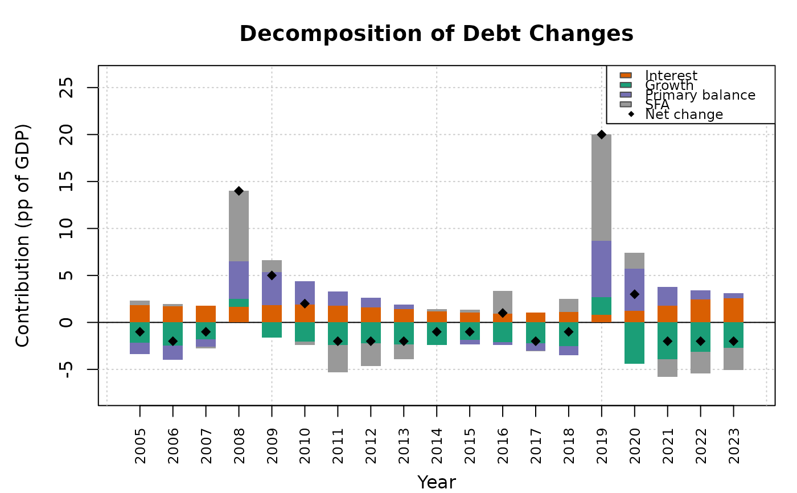

Breaks down observed year-on-year changes in the debt-to-GDP ratio into four components:
Arguments
- debt
Numeric vector of historical debt-to-GDP ratios.
- interest_rate
Numeric vector of effective interest rates on government debt. Must be the same length as
debt.- gdp_growth
Numeric vector of nominal GDP growth rates. Must be the same length as
debt.- primary_balance
Numeric vector of primary balance-to-GDP ratios (positive = surplus). Must be the same length as
debt.- years
Optional integer vector of year labels. Must be the same length as
debt. IfNULL(default), years are numbered sequentially.
Value
An S3 object of class dk_decomposition containing:
- data
A
data.framewith columnsyear,debt,change,interest_effect,growth_effect,snowball_effect,primary_balance_effect, andsfa.- years
The year labels used.
Details
Interest effect: \(r_t / (1 + g_t) \cdot d_{t-1}\)
Growth effect: \(-g_t / (1 + g_t) \cdot d_{t-1}\)
Primary balance effect: \(-pb_t\)
Stock-flow adjustment (residual): actual change minus the sum of the three identified components.
This is the standard decomposition used by the IMF (2013) and European Commission. The SFA residual captures privatisation receipts, exchange-rate valuation changes, below-the-line operations, and any measurement error.
References
Blanchard, O.J. (1990). Suggestions for a New Set of Fiscal Indicators. OECD Economics Department Working Papers, No. 79. doi:10.1787/budget-v2-art12-en
International Monetary Fund (2013). Staff Guidance Note for Public Debt Sustainability Analysis in Market-Access Countries. IMF Policy Paper.
Examples
d <- dk_sample_data()
dec <- dk_decompose(
debt = d$debt,
interest_rate = d$interest_rate,
gdp_growth = d$gdp_growth,
primary_balance = d$primary_balance,
years = d$years
)
dec
#>
#> ── Debt Decomposition ──────────────────────────────────────────────────────────
#> • Periods: 19 (2005–2023)
#> • Cumulative change: 24 pp
#> • Interest effect: 29.8 pp
#> • Growth effect: -39.5 pp
#> • Primary balance: 20.9 pp
#> • Stock-flow adj.: 12.8 pp
plot(dec)
